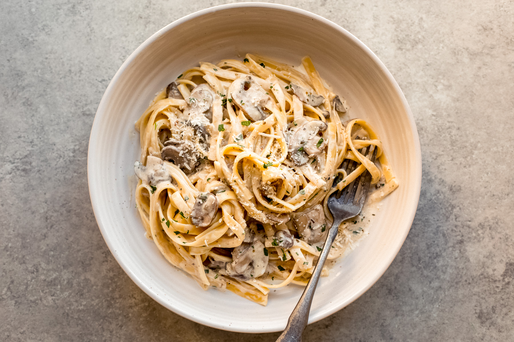

Pasta with mushroom sauce

Saucy and mushroomy
Fresh mushrooms, hot pasta and cheesy sauce ist the best!
Cook it like at your favorite Italian restaurant
- Mushrooms
- Linguine Pasta
- Soft cheese
- Clean and cut the mushrooms
- Heat them in a pan
- Add the cheese to the pan
- Cook the Linguine pasta
- Serve the pasta with the mushroom sauce
Back